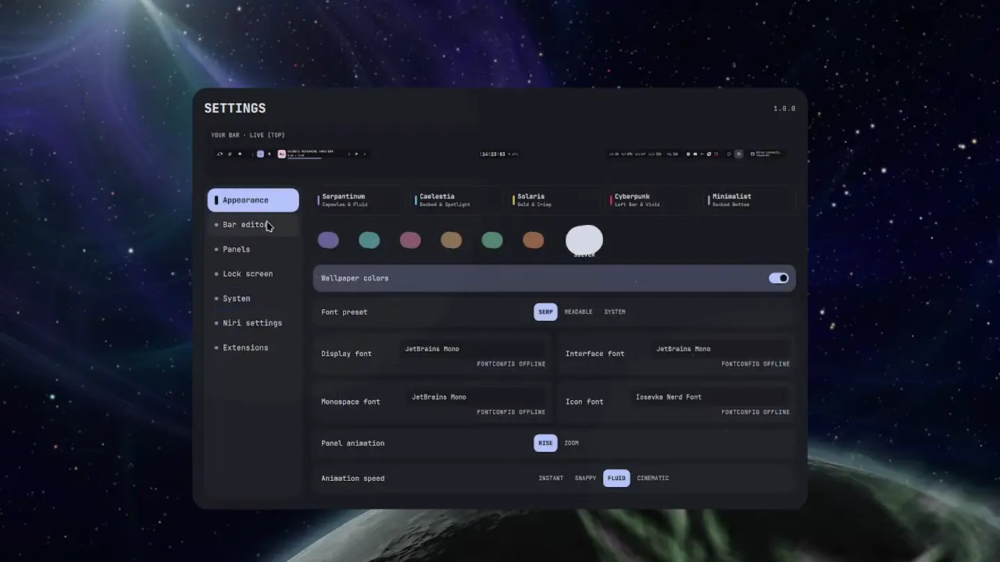

Ephemeris
Bigger tools, opened when you need them.
Search, settings, calendar, and focused instruments that open when you need them.

FindSearch applications, actions, settings, and shell tools.
InspectGive calendar, weather, audio, and system details room to breathe.
FocusOne instrument at a time, with a clear way back.
What it does
Name-first search
The command palette prioritizes application names and keeps selection stable when results refresh.
Your settings
Adjust appearance, motion, bar layouts, supported Niri settings, and Umbra behavior.
Everyday instruments
Open calendar, weather, clipboard, notifications, power, network, audio, and capture tools.
Opens where you clicked
Tools open on the display you clicked from and never cover the bar.
Try it
After installing, open an instrument from Aperture, the launcher, or your terminal.
Get Tonantzintlablackhole open settings blackhole open calendar